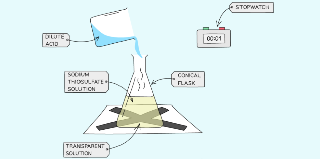

Factors affecting rate of reaction.
There are five factors that affect the rate (speed) of a chemical reaction:
- Temperature
- Concentration
- Particle size
- Use of catalyst
- Pressure
Concentration
Effect of concentration on the Rate of Reaction:
Procedure
- Measure 50 cm3 of Sodium Thiosulfate solution into a flask.
- Measure 5 cm3 of dilute Hydrochloric acid into a measuring cylinder.
- Draw a cross on a piece of paper and put it underneath the flask.
- Add the acid into the flask and immediately start the stopwatch.
- Look down at the cross from above and stop the stopwatch when the cross can no longer be seen.
- Repeat using different concentrations of Sodium Thiosulfate solution (mix different volumes of sodium thiosulfate solution with water to dilute it).
Results
- With an increase in the concentration of a solution, the rate of reaction will increase.
- This is because there will be more reactant particles in a given volume, allowing more frequent and successful collisions, increasing the rate of reaction.
Graphical analysis

Graph showing the effect of concentration on the rate of reaction
- Compared to a reaction with a reactant at a low concentration, the graph line for the same reaction but at a higher concentration has a steeper gradient at the start and becomes horizontal sooner.
- This shows that with increased concentration of a solution, the rate of reaction will increase.
Particle size
Effect of Surface Area (particle size) of a Solid on the Rate of Reaction:

Procedure
- Add dilute hydrochloric acid into a conical flask.
- Use a capillary tube to connect this flask to a measuring cylinder upside down in a trough of water (Overwater method)
- Add calcium carbonate chips into the conical flask and close the bung.
- Measure the volume of gas produced in a fixed time using the measuring cylinder.
- Repeat with different sizes of calcium carbonate chips (solid, crushed and powdered).
Results
- Smaller sizes of chips causes an increase in the surface area of the solid, so the rate of reaction will increase.
- This is because more surface area of the particles will be exposed to the other reactant so there will be more frequent and successful collisions, increasing the rate of reaction.
Graphical analysis

Graph showing the effect of the surface area of a solid on the rate of reaction
- Compared to a reaction with lumps of reactant, the graph line for the same reaction but with powdered reactant has a steeper gradient at the start and becomes horizontal sooner
- This shows that with increased surface area of the solid, the rate of reaction will increase.